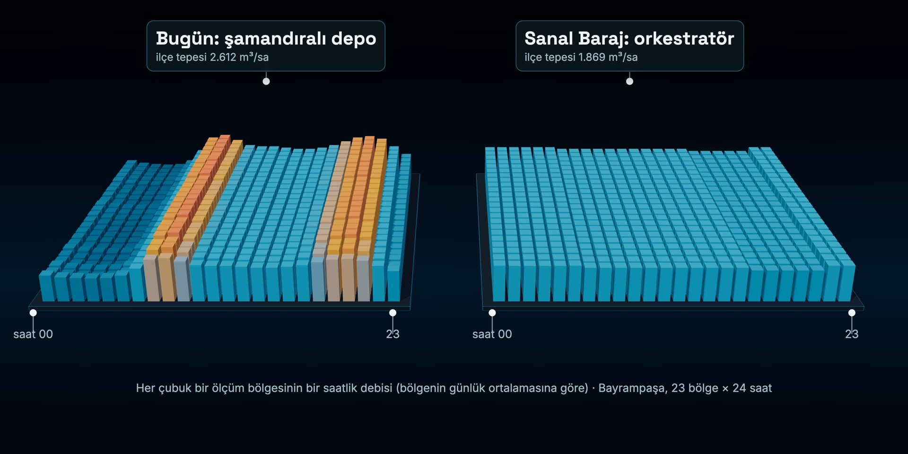
Her gün
Tepe düzleşir
Depolar gece ve sakin saatlerde dolar. Aynı boru ve pompa daha çok binaya yeter.
−m³/sa tepe, bugün
−m³/sa tepe, orkestratör
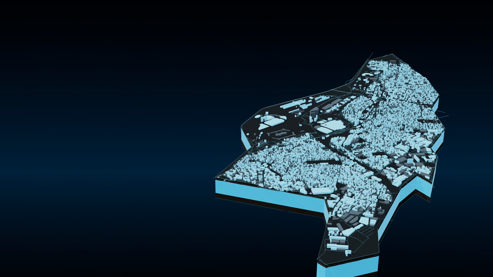
Water AI Hackathon 2026 · Takım AQUAİST
Şehrin bodrumlarında zaten bir baraj var. Biz onu yönetilebilir yaptık.
Binlerce apartman deposu ve hidrofor bugün dağınık ve habersiz çalışıyor. Küçük bir kit ve bir dijital ikizle hepsi tek bir akıllı rezervuar gibi, şebekenin yararına birlikte çalışır.
şebekenin tepe debisi, normal gün
kesinti dönüşünde susuz kişi-saat (bugün −)
depremden sonra temiz içme suyu (bugün −)
sızıntı için aranacak boru (bugün −)
Bayrampaşa dijital ikizi, 24 saat simülasyon (EPANET). Şebeke OpenStreetMap'ten üretilmiş modeldir, gerçek İSKİ şebekesi değildir.
Tanıtım videosu
Problem
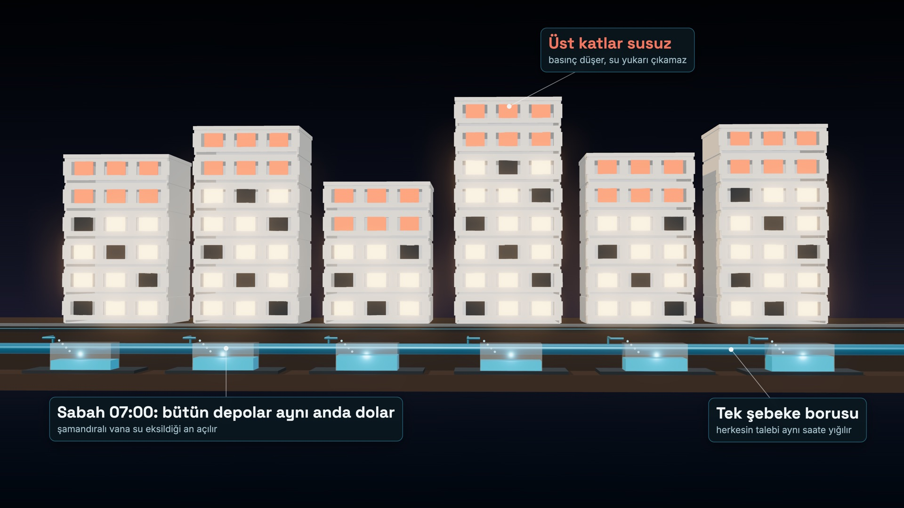
İstanbul apartmanlarının bodrumundaki depolar şamandıralı vanayla çalışır: su eksildiği an depo yeniden dolar. Sabah ve akşam binlerce depo aynı anda dolunca basınç düşer, üst katlar ve deposuz binalar susuz kalır.
Nasıl çalışır
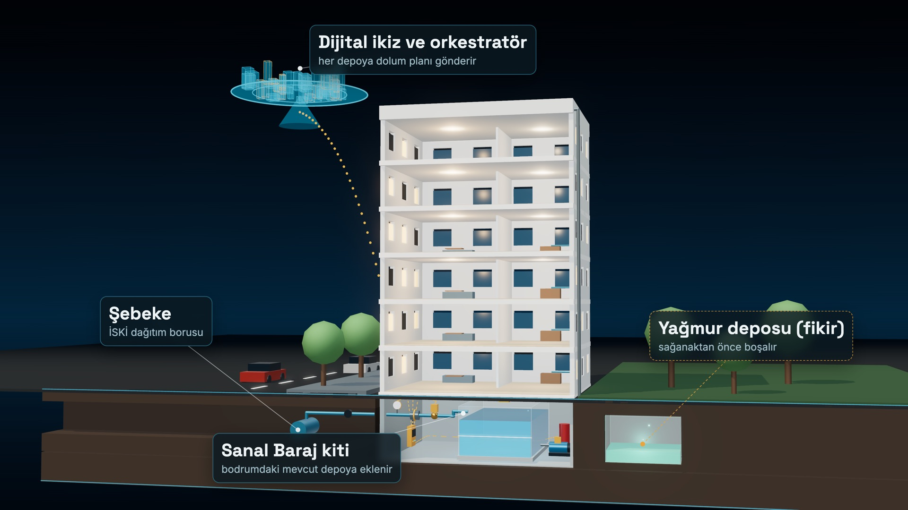
Mevcut depoya eklenen kit her 15 dakikada seviye, basınç ve sarsıntıyı gönderir.
İlçenin bütün boruları ve binaları simülasyonda; her karar önce burada denenir.
Yapay zekâ her deponun ne zaman ve ne kadar dolacağına karar verir; kit vanayı buna göre açar.
Sonuçlar · Bayrampaşa

Depolar gece ve sakin saatlerde dolar. Aynı boru ve pompa daha çok binaya yeter.
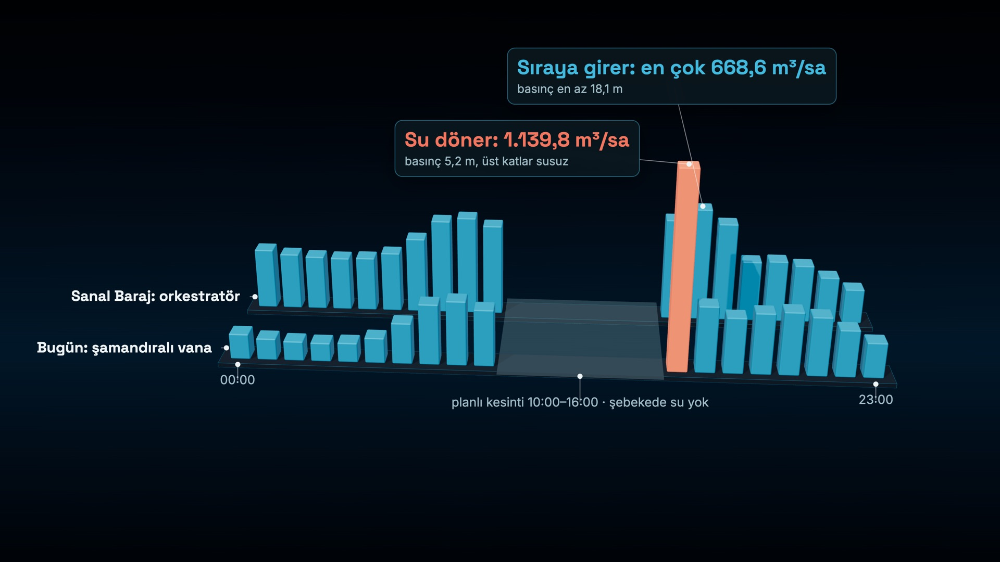
Kit kesintiyi önceden bilir, depoları doldurur; su dönünce dolumu sıraya koyar.
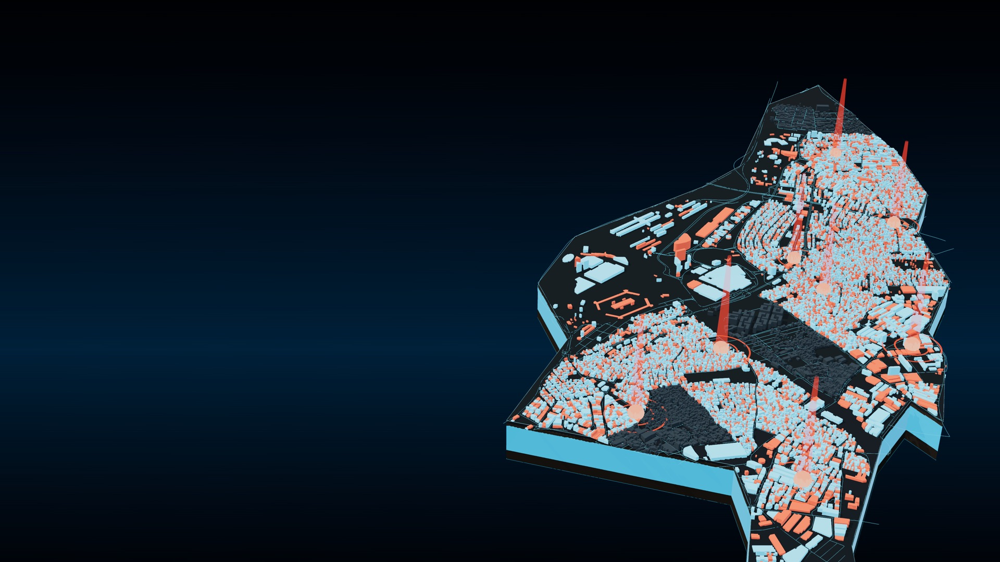
İvmeölçer sarsıntıda girişi saniyeler içinde kapatır; kırık şebekedeki şüpheli su depoya girmez.
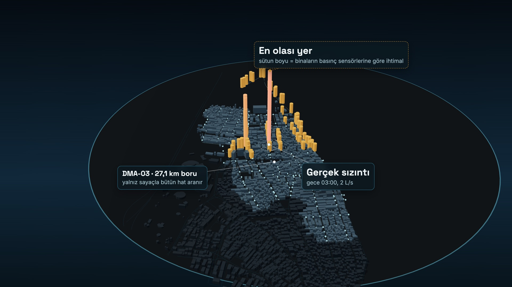
Gece şebeke sessizken binalardaki basınç sensörleri yeni bir sızıntının izini görür.
Ölçek · altı ilçe
Her ilçe OpenStreetMap ve İBB verisinden ek ayar olmadan üretildi. Satıra tıklayın, o ilçenin dijital ikizi açılsın.
| İlçe | Bina | Kesinti dönüşü en düşük basınç | Susuz kişi-saat, dönüşte | Deprem: kirlenme riskinde depo | Deprem: temiz içme suyu, gün |
|---|
Solda bugün (şamandıralı vana), sağda Sanal Baraj kiti. Normal günde tepe altı ilçede de − düşüyor; çünkü modelde bütün ilçelere aynı saatlik talep profili uygulanıyor. İlçeye özgü fark kesinti ve deprem günlerinde.
Yeni fikirler · doğanın enerjisiyle
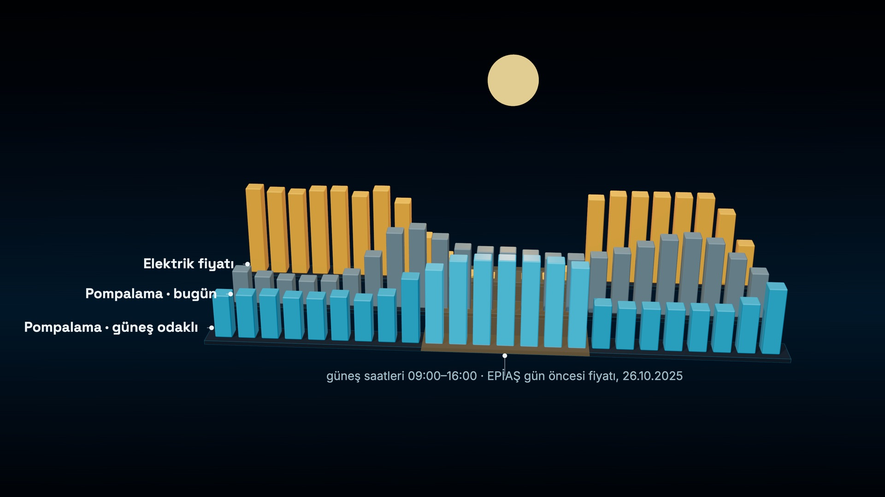
Orkestratör yarının elektrik fiyatını okur; depoları güneş elektriğinin bol ve ucuz olduğu saatte doldurur.
−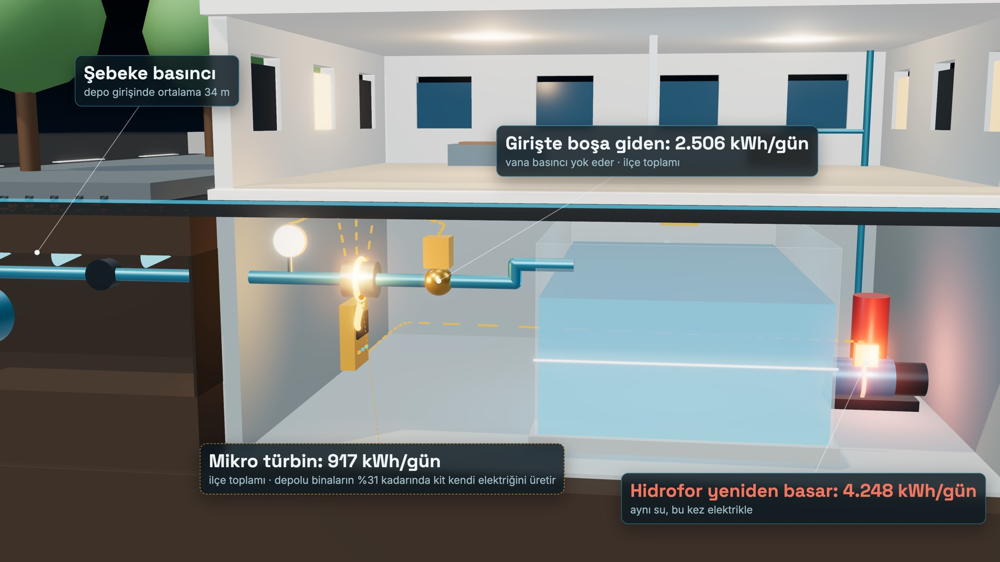
Su depoya basınçla gelir, vana bu basıncı yok eder. Girişe mikro türbin konursa kit kendi elektriğini üretir.
−kWh/gün, ilçe toplamı (türbin verimi %40, tahmin)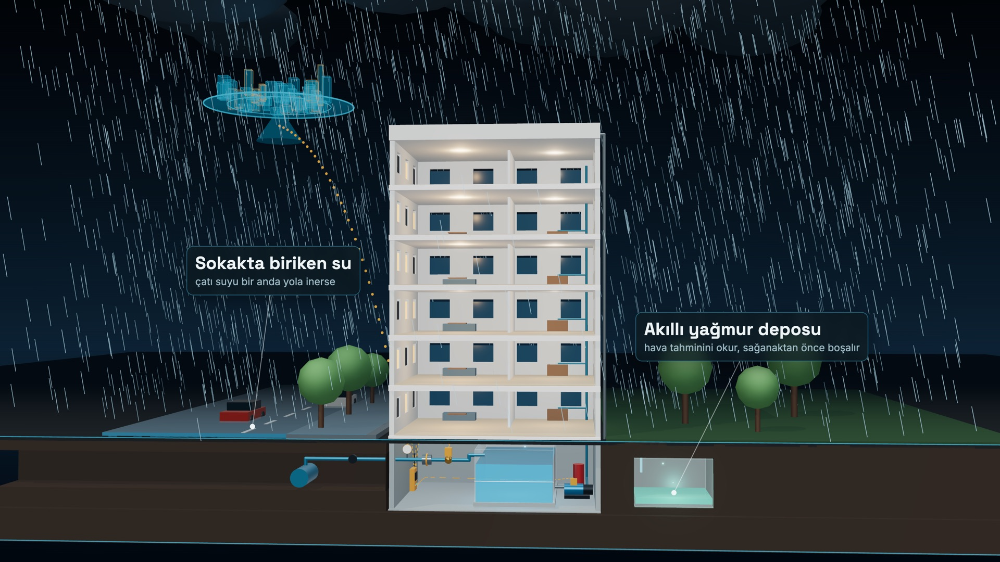
Akıllı yağmur deposu hava tahminini okur ve sağanaktan önce kendini boşaltır; çatı suyu yola inmez.
−Kit tasarımı
Şamandıranın yerine motorlu vana, yanına iki sensör ve bir kutu. Bina başına 245–425 € (tahmin), tesisatçı yaklaşık iki saatte takar.
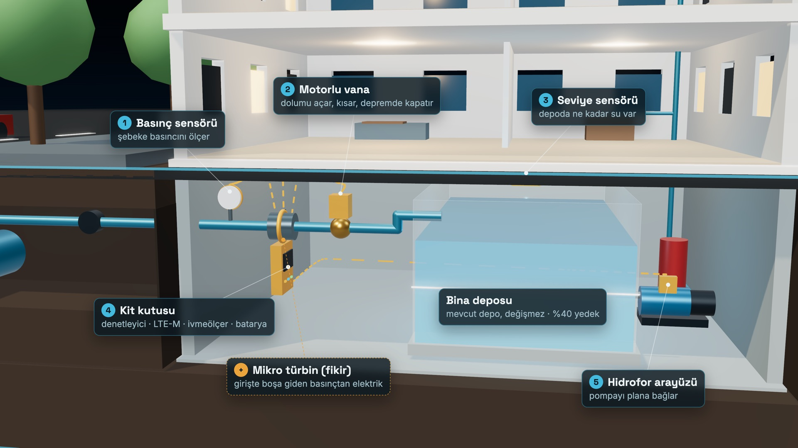
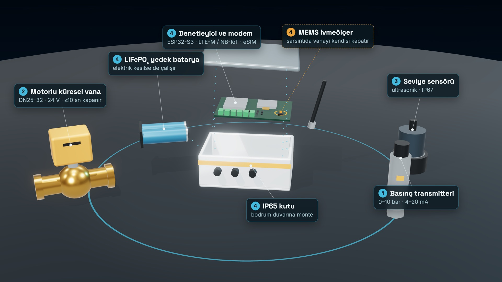
Canlı dijital ikiz
Kurulum gerekmez. Beş görünüm, dört senaryo, 15 adımlık sunum modu.
Takım AQUAİST
Dijital ikiz, simülasyon, yapay zekâ modülleri, web arayüzü ve canlı site.
İBB ve İSKİ verilerinin derlenmesi, susuzluk ve arıza analizi, ilçe önceliklendirmesi.
Kit malzemelerinin araştırılması, maliyet tablosu, saha ve pilot planı.
Enerji ve ölçek araştırması, etki göstergeleri, sunum ve hikâye kurgusu.